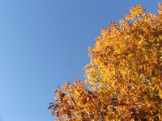
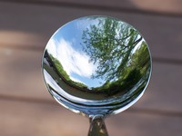

Next Photo
-
Vote
Grass Shadows Snow
This type of photo is by far my favorite, very simple, but enjoyable. There are three main aspects of this photo that I like. The first is the simplicity, in the colors, and shadows. The orange int he grass contrasts with the cool blues of the snow and the shadows contrast with the light. Secondly the sharpness of this photo is wonderful, leaving the subject to draw your attention, even though there is only a blade of frozen glass. My final, and favorite aspect of this photo is the dreamy feel to the focus of the background. The softness adds to the ice plating the blades and the sparkle of the snow is icing on the cake. Even as the subject is the in focus blade, the background is even more fulfilling to view, while not detracting or making the photo too busy.
More...
Title: Grass Shadows Snow
Description: This type of photo is by far my favorite, very simple, but enjoyable. There are three main aspects of this photo that I like. The first is the simplicity, in the colors, and shadows. The orange int he grass contrasts with the cool blues of the snow and the shadows contrast with the light. Secondly the sharpness of this photo is wonderful, leaving the subject to draw your attention, even though there is only a blade of frozen glass. My final, and favorite aspect of this photo is the dreamy feel to the focus of the background. The softness adds to the ice plating the blades and the sparkle of the snow is icing on the cake. Even as the subject is the in focus blade, the background is even more fulfilling to view, while not detracting or making the photo too busy.
Keywords: snow,shadow,contrast,grass,sharp
Hidden: n
Date added: Tue Feb 13 11:49:58 CST 2007
Date taken: Tue Jan 16 14:31:57 CST 2007
Camera: Fujifilm Finepix S5100
Resolution: 2272 x 1704
Mode: Shutter Priority
Shutter speed: 1/640
Flash: Not Used
Exposure time: 1/640
Iso: 100
Metering: Matrix
Aperture: f/6.3
Focal length: 10.7mm
Artist: NathanielGuy Mahieu
Copyright: 2006 NathanielGuy Mahieu
Views: 1018

